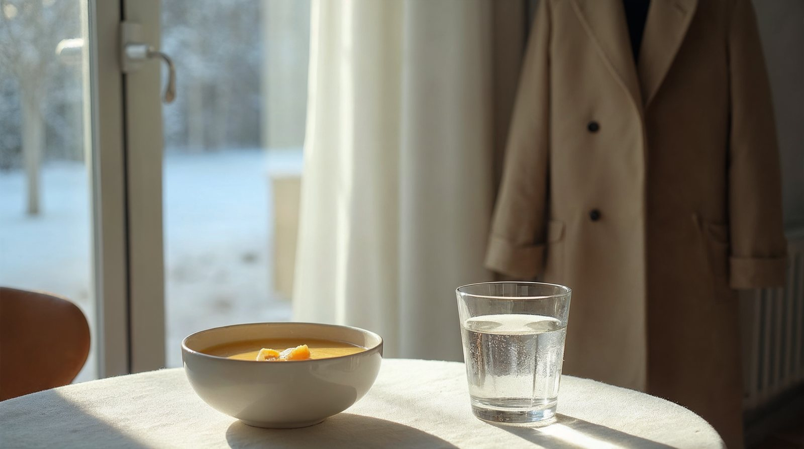
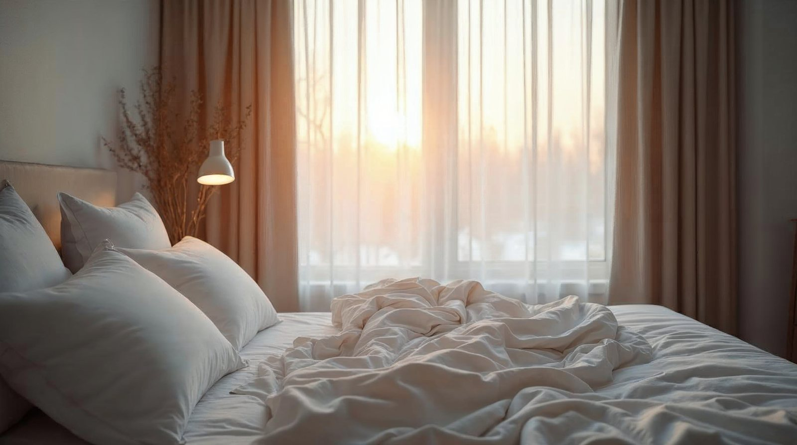
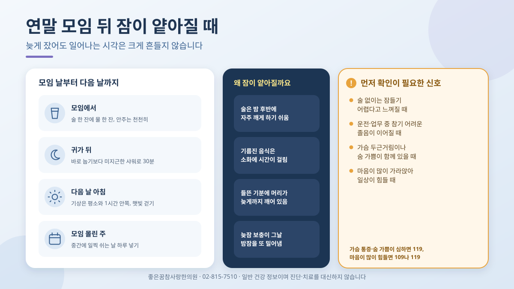

이종호 한의사 감수좋은꿈참사랑한의원 대표원장 (한의사 면허번호 19769)발행 2026-11-22 · 수정 2026-11-26
이 글의 차례
송년회에서 돌아온 밤, 분명 금세 잠들었는데 새벽에 목이 말라 깨셨나요? 연말 모임 뒤에 잠이 얕아지는 것은 늦은 술과 음식, 들뜬 마음, 늦어진 귀가가 한꺼번에 겹치기 때문입니다. 저는 잠든 시각은 늦어지더라도 일어나는 시각만큼은 크게 흔들리지 않게 지키는 것을 첫걸음으로 권합니다.
다만 술자리 뒤에 가슴이 조이듯 아프거나 숨이 몹시 차거나, 피를 토하거나 검은 변을 본다면 잠 이야기는 미루고 가까운 응급실에서 바로 확인을 받으세요.
밤 11시 40분, 택시에서 내려 현관문을 엽니다. 귀에는 아직 노래방 반주가 웅웅거리고, 입안에는 마지막에 먹은 안주 맛이 남아 있습니다. 대충 씻고 누우니 술기운에 금세 잠이 드는 것 같았는데, 새벽 3시쯤 목이 바짝 말라 눈이 떠집니다. 물을 마시고 화장실에 다녀오니 이번에는 잠이 오지 않습니다.
단체 대화방에 올라온 사진을 몇 장 넘겨 보다 보니 어느새 4시입니다. 아침 알람은 유난히 크게 울리고, 그날 하루는 몸도 머리도 반 박자씩 늦습니다. 그런데 달력을 보면 이번 주에 모임이 두 번 더 남아 있습니다.
진료실에서 이런 말씀을 자주 듣습니다. "12월만 되면 몸이 남아나질 않아요." "모임 다음 날은 분명히 잤는데 하나도 안 잔 것 같아요."
빠질 수 없는 자리, 오랜만에 보는 반가운 얼굴, 한 해를 마무리하는 인사가 다 소중해서 마음은 즐거운데 몸이 따라가 주지 않는 계절이지요. 이 사람 저 사람 챙기느라 정작 내 몸은 뒷전이었던 한 달, 참 바쁘게 지내셨을 겁니다.
왜 모임이 있던 밤에는 잠이 얕아질까요
술은 처음에는 졸음을 부릅니다. 그런데 몸이 술을 분해하는 동안 밤 후반의 잠이 얕아지고 자주 깨기 쉬운 것으로 알려져 있습니다.
술은 소변을 늘려 새벽에 화장실을 찾게 하고, 몸의 물기를 빼앗아 목이 마르게 하며, 목과 혀 주변의 근육을 느슨하게 해 평소보다 코를 더 골게 만들기도 합니다. 새벽 3시의 갈증과 화장실, 옆 사람이 들은 우렁찬 코골이가 모두 같은 뿌리에서 나오는 셈입니다.
늦게 먹은 음식도 잠을 무겁게 합니다. 기름진 구이와 튀김, 짭짤한 찌개를 밤늦게 먹고 바로 누우면 소화가 덜 된 채로 잠들게 됩니다. 누운 자세에서 신물이 올라오거나 명치가 쓰린 분도 있고, 짠 음식 탓에 새벽에 목이 말라 깨는 분도 있습니다.
모르는 사이에 마시는 카페인도 있습니다. 2차로 들른 카페의 커피, 에너지 음료를 섞은 술, 콜라 한 잔이 밤잠을 얕게 만듭니다. 술자리에서는 이런 것까지 챙기기 어렵지요.
들뜬 마음도 쉽게 가라앉지 않습니다. 오랜만에 사람들과 웃고 떠들고 노래하고 나면 몸은 피곤해도 머리는 한동안 깨어 있습니다. 집에 와서도 대화방 알림이 이어지고, 들은 이야기가 머릿속에서 맴돕니다. 즐거웠던 자리 뒤에 오히려 마음이 허전해져 잠이 안 온다는 분도 계십니다.
그리고 다음 날이 있습니다. 늦게 잔 만큼 늦게 일어나고, 오후에 긴 낮잠을 자면 그날 밤에는 잠이 오지 않습니다. 잠을 설친 날은 유독 음식이 당기기도 하는데, 잠이 부족하면 식욕 조절이 흔들릴 수 있습니다. 하루하루는 작은 흔들림이지만 모임이 몰린 주에는 그 흔들림이 쌓여 한 주 전체의 리듬이 뒤로 밀립니다.
이런 분들을 자주 뵙습니다
한 주에 모임이 서너 번씩 몰린 직장인들이 많습니다. 부서 송년회, 거래처 모임, 동창 모임, 가족 모임이 줄지어 있어 달력만 봐도 숨이 찬다고 하십니다.
이런 분께는 모임과 모임 사이에 아무 약속 없는 저녁을 하루라도 미리 비워 두고, 그날은 일찍 씻고 일찍 쉬는 날로 정해 보시라고 말씀드립니다. 어떤 모임은 1차까지만 하겠다고 미리 정해 두는 것도 방법입니다.
술을 잘 못 마시는데 분위기에 맞추느라 늦게까지 자리를 지키는 분들도 계십니다. 이런 분들은 술보다 늦어진 귀가와 긴장 때문에 잠이 흔들리고, 다녀와서도 혹시 실수한 건 없는지 곱씹느라 잠이 늦어집니다. 처음부터 술 대신 마실 음료를 정해 두고 귀가 시각을 미리 알려 두시라고 말씀드립니다. 내 몸을 챙기는 것이 자리를 망치는 일은 아닙니다.
모임 다음 날 아침 일찍 운전을 해야 하는 분들도 있습니다. 늦게까지 마신 날은 다음 날 아침에도 술기운이 남아 있을 수 있다고 알려져 있고, 잠까지 모자라면 졸음이 더해집니다. 이런 날은 전날 마시는 양을 더 조심하시고, 아침에는 대중교통을 이용하시는 편이 안전합니다.
금요일 송년회 뒤 주말에 오후까지 주무시는 분들도 많습니다. 그러면 일요일 밤에는 잠이 오지 않고 월요일 아침이 더 고단합니다. 주말 아침에도 평소보다 한 시간 안쪽으로만 늦게 일어나고, 모자란 잠은 이른 오후의 짧은 낮잠으로 채우시길 권합니다.
모임을 끊으시라는 말씀이 아닙니다
걷기를 정말 좋아하시는 분이 발바닥 통증을 되풀이할 때, 원칙대로라면 한동안 걷기를 줄이고 쉬면서 치료하는 것이 맞습니다. 그런데 걷는 것이 삶의 즐거움인 분께 걷지 말라고만 하면 그 말씀을 지키기 어렵습니다. 그래서 저는 하고 싶은 일이 무엇인지 먼저 듣고, 어느 만큼까지 걸어도 되는지를 함께 정하려고 합니다.
연말 모임도 같습니다. 한 해를 함께 보낸 사람들과 마주 앉는 자리를 다 끊으시라고 말씀드릴 생각은 없습니다. 어느 모임은 꼭 가고 싶은지, 어느 모임은 1차까지만 해도 괜찮은지, 술 없이 쉬는 저녁은 언제로 할지를 함께 정하는 편이 지키기 쉽습니다. 무리가 되면 줄이고, 몸이 보내는 신호가 커지면 쉬면서 확인하면 됩니다.
예전에 진맥 이야기를 하다가, 이 사람의 몸이 이 사람을 위해 기도해 주고 있다, 기다려 주고 있다는 말이 제 입에서 나온 적이 있습니다. 일을 하고, 살림을 하고, 누군가를 챙기느라 정작 본인이 밤에 몇 번 깼는지 셀 겨를도 없이 사는 때가 있습니다. 연말이 꼭 그렇지요. 그렇게 바쁜 한 달 동안에도 몸은 묵묵히 그 사람을 기다려 주고 있습니다.

모임 전, 모임 중, 돌아와서, 그리고 다음 날
모임이 있는 날 낮부터 준비할 수 있습니다. 점심은 평소처럼 드시고, 오후 4시쯤 바나나나 삶은 달걀 같은 간단한 간식을 드세요. 빈속에 첫 잔을 시작하지 않기 위해서입니다. 커피는 오후 2시 전에 마칩니다.
모임이 시작되면 첫 잔 전에 물 한 컵을 마십니다. 안주는 두부, 생선, 채소처럼 덜 기름진 것부터 천천히 드시고, 술 한 잔에 물 한 잔을 곁들입니다.
마지막 한 시간은 술 대신 물이나 카페인 없는 따뜻한 차로 바꾸고, 2차 카페의 커피나 에너지 음료를 섞은 술은 피합니다. 몇 시에는 일어서겠다고 미리 정해 두고 자리에서도 한 번 말해 두면 지키기가 쉬워집니다.
집에 돌아오면 물을 한 컵 마십니다. 술을 마신 날에는 뜨거운 탕 목욕이나 사우나를 피하고 미지근한 물로 짧게 씻습니다. 휴대폰 사진과 대화방은 내일 보기로 하고, 조명을 낮춘 채 15~30분 정도 조용히 숨을 고른 뒤 눕습니다. 머리맡에 작은 컵에 물을 떠 두면 새벽에 목이 말라 깼을 때 부엌까지 불을 켜고 가지 않아도 됩니다.
다음 날 아침에는 평소 시각에서 한 시간 안쪽으로 일어납니다. 커튼을 열어 빛을 보고 미지근한 물을 천천히 마십니다. 속이 불편하다면 맵고 뜨거운 국물보다 순한 국이나 죽처럼 부담이 적은 음식을 천천히 드세요. 출근길이나 점심시간에 10~20분 바깥을 걸으면 머리가 맑아지는 데 보탬이 될 수 있습니다.
다음 날 낮에는 커피를 오전에만 드시고, 너무 졸리면 오후 3시 전에 20분 안쪽으로 눈을 붙입니다. 해장술은 잠의 리듬을 다시 흔들 수 있어 피합니다. 저녁에는 술을 쉬고 가볍게 일찍 드십니다. 잠자리에는 평소보다 30분쯤 일찍 들어도 좋지만, 두세 시간씩 앞당겨 누우면 오히려 잠이 오지 않아 뒤척이기 쉽습니다.
모임이 몰린 주라면 일요일 저녁에 달력을 펴고 한 주를 미리 그려 보세요. 모임이 있는 날, 술 없이 쉬는 날, 일찍 자는 날을 표시해 두면 한 주가 덜 막막합니다.
이번 주를 한번 돌아볼까요? 술 없이 보낸 저녁이 하루라도 있었는지, 모임 다음 날 평소보다 두 시간 넘게 늦게 일어나지는 않았는지, 새벽에 목이 말라서나 화장실 때문에 깬 날이 몇 번이었는지. 술을 마시지 않은 날에도 잠들기 어려웠다면 그것도 적어 두세요. 이 답이 다음 모임을 어떻게 보낼지 정해 줍니다.

연말이 지나간 뒤, 리듬을 되돌리는 일주일
모임이 끝나도 잠이 바로 제자리로 돌아오지 않는 분들이 있습니다. 한 달 가까이 늦게 자고 늦게 일어나던 몸은 그 시간에 익숙해져 있기 때문입니다.
이럴 때는 잠드는 시각을 한 번에 당기기보다 일어나는 시각을 먼저 고정하고, 잠드는 시각은 하루 15~30분씩 천천히 앞으로 옮겨 오는 편이 수월합니다. 아침 빛, 술 없는 저녁, 잠들기 3시간 전의 저녁 식사가 이 일주일의 기둥입니다.
술을 줄이거나 끊기로 하신 분 가운데에는 처음 며칠 오히려 잠이 얕아졌다고 느끼는 분도 계십니다. 술에 기대어 잠들던 몸이 새로운 리듬을 찾는 동안 생길 수 있는 일이니, 그 때문에 다시 술을 찾지는 마시고 기록하며 지켜봐 주세요. 그 기간이 길어지거나 힘들다면 상담을 받으시면 됩니다.
다만 매일 많이 마시던 분이 갑자기 끊은 뒤 손이 심하게 떨리고 식은땀이 나거나 헛것이 보인다면, 지켜보지 말고 가까운 응급실에서 바로 확인을 받으세요.
술을 마셔야 잠이 온다는 느낌이 생겼다면 그 자체로 한번 멈춰 볼 신호입니다. 처음에는 한 잔이면 되던 것이 두 잔, 세 잔으로 늘고 있다면 더욱 그렇습니다. 이럴 때는 기다리지 말고 먼저 상담을 받아 보세요. 부끄러워하실 일이 아닙니다. 그만큼 고단한 한 해를 보내셨다는 뜻일 수 있습니다.
얼마나 지켜보고, 언제 진료를 받을까요
모임이 몰린 시기가 지나면 1~2주는 잠든 시각과 일어난 시각, 술을 마신 날을 적으며 지켜보세요. 모임이 없는 날에도 잠이 얕은 상태가 2~3주 넘게 이어지거나, 아침마다 몸이 무거워 일에 지장이 있다면 상담을 받아 보시길 권합니다.
연말에 지친 몸을 보고 보약부터 찾으시는 분도 계십니다. 그럴 때 저는 약보다 진맥과 상담이 먼저라고 말씀드립니다. 무엇이 문제인지 알아야 무엇을 할지 정할 수 있고, 맥에 따라서는 보약을 권하지 않을 때도 있습니다. 요즘은 가까운 곳에 병원이 많으니, 작게 불편할 때 물어보시면 좋겠습니다. 크게 키워서 오시면 본인이 가장 힘듭니다.
이런 증상은 먼저 확인이 필요합니다
- 가슴 통증이나 심한 숨참이 있거나, 가슴이 심하게 두근거리며 불규칙하게 뛰는 경우
- 피를 토하거나 검은 변을 보거나, 배가 심하게 아픈 경우
- 술을 마신 날 코를 크게 골고 자다가 숨이 멎는 것 같다는 말을 들은 경우
- 낮에 운전이나 일을 하다가 참기 어려운 졸음이 이어지는 경우
- 마음이 많이 가라앉아 일상이 힘들거나 스스로를 해칠 생각이 드는 경우
가슴 통증이나 심한 숨참, 심한 두근거림이 있을 때, 피를 토하거나 검은 변을 보거나 배가 심하게 아플 때는 한의원 진료를 기다리지 말고 가까운 응급실에서 바로 확인을 받으세요. 코골이와 숨 멈춤은 수면 검사를 먼저 권하고, 졸음이 심한 날에는 운전대를 잡지 않습니다.
수면제나 신경안정제를 드시는 분은 술과 함께 드시지 마세요. 복용 중인 약은 처방한 의사와 상의 없이 줄이거나 끊지 않습니다. 마음이 너무 힘들어 스스로를 해칠 생각이 든다면 혼자 견디지 말고 ☎ 109에 바로 도움을 청하세요.
좋은꿈참사랑한의원에 처음 오시면
처음 오시면 저는 최근 2~3주의 모임 일정부터 여쭙니다. 모임이 있던 날 몇 시에 돌아와 몇 시쯤 잠드셨는지, 어떤 술을 얼마나 드셨는지, 마지막으로 먹은 시각과 다음 날 일어난 시각은 언제인지. 낮잠과 커피, 모임이 없는 날의 잠도 함께 듣습니다. 속은 편한지, 변은 어떤지, 밤에 덥거나 땀이 나서 깨는지, 요즘 마음은 어떤지도 차례로 여쭙습니다.
이야기를 다 들은 뒤에는 양손을 올려 봐 달라고 하고 맥을 짚습니다. 맥을 보는 동안 몸이 덥게 느껴지는지 차게 느껴지는지, 얼굴이 달아오르는지 여쭙고, 필요하다고 판단되면 혀를 보거나 배를 눌러 소화와 긴장 상태를 살핍니다.
그렇게 모은 이야기로 침이나 한약 상담 등 지금 상태에 맞는 방법을 정하고, 남은 연말 일정 속에서 지켜볼 잠의 원칙 한두 가지를 함께 정리합니다.
올 때마다 맥을 짚으며 생활 습관 이야기를 하다 보면 제 말이 잔소리처럼 들릴 때도 있을 겁니다. 그래서 다음에 뵈었을 때는 했던 말을 또 하기 전에 먼저 여쭙고 싶습니다. 해 보니 어땠는지, 바쁜 연말 속에서 무엇이 어려웠는지. 지키기 어려웠던 사정까지 듣고 나야 다음 이야기를 함께 정할 수 있습니다.
맥을 읽어 드리고, 약을 드셨다면 그 뒤의 반응을 보고, 다시 맥을 짚습니다. 저는 그렇게 함께 걸어가는 치료를 생각합니다. 찌개를 끓일 때 위로 떠오르는 찌꺼기를 걷어내듯, 몸과 마음에 올라오는 괴로움을 하나하나 걷어내는 일이라고 여깁니다.
오실 때 모임이 있던 날짜와 귀가 시각, 잠든 시각, 마신 술의 종류와 양, 마지막 식사 시각, 다음 날 일어난 시각, 복용 중인 약이나 수면 보조제를 메모해 오시면 이야기가 훨씬 빨라집니다.
마치며
한 해를 함께 보낸 사람들과 마주 앉는 연말의 자리는 소중합니다. 다만 즐거웠던 밤 다음 날 아침에는 내 몸에게도 수고했다는 인사를 건네 주셨으면 합니다. 물 한 컵, 커튼을 여는 손, 술 없이 쉬는 저녁 하루. 그 작은 것들이 바쁜 연말을 지나가게 해 줍니다.
다음에 오시면 지난 모임 다음 날 몇 시에 일어나셨는지부터 여쭙겠습니다. 늦잠을 주무셨어도 괜찮습니다. 거기서부터 다시 시작하면 됩니다.
함께 읽으면 좋은 글
- 저녁 식사와 술은 잠에 어떤 영향을 주나요?
- 연말 송년회에서 웃고 떠들다 집에 돌아온 밤, 오히려 마음이 텅 빈 듯 가라앉을 때는 어떻게 살피나요?
- 평일에는 괜찮다가 주말이나 연말 휴가에 늦잠을 잔 날이면 오후까지 머리가 지끈거릴 때는 어떻게 살피나요?

먼저 확인이 필요한 신호
- 가슴 통증이나 심한 숨참이 있거나, 가슴이 심하게 두근거리며 불규칙하게 뛰는 경우
- 피를 토하거나 검은 변을 보거나, 배가 심하게 아픈 경우
- 술을 마신 날 코를 크게 골고 자다가 숨이 멎는 것 같다는 말을 들은 경우
왜 모임이 있던 밤에는 잠이 얕아질까요
- 술은 처음에는 졸음을 부릅니다.
- 그런데 몸이 술을 분해하는 동안 밤 후반의 잠이 얕아지고 자주 깨기 쉬운 것으로 알…
이런 분들을 자주 뵙습니다
- 한 주에 모임이 서너 번씩 몰린 직장인들이 많습니다.
- 부서 송년회, 거래처 모임, 동창 모임, 가족 모임이 줄지어 있어 달력만 봐도 숨이…
모임을 끊으시라는 말씀이 아닙니다
- 걷기를 정말 좋아하시는 분이 발바닥 통증을 되풀이할 때, 원칙대로라면 한동안 걷기를…
- 그런데 걷는 것이 삶의 즐거움인 분께 걷지 말라고만 하면 그 말씀을 지키기 어렵습니다.
자주 묻는 질문
술을 마시면 잠이 잘 오는 것 같은데 괜찮은가요?
처음에는 졸음이 와도 밤 후반에 자주 깨고 얕아지는 분이 많습니다. 잠들기 위해 술에 기대는 습관이 있다면 상담을 권합니다.
모임 다음 날 낮잠을 자도 되나요?
짧은 낮잠은 괜찮지만 길어지면 밤잠에 영향을 줄 수 있어 30분 안쪽을 권하는 경우가 많습니다.
한의원에서는 무엇을 보나요?
잠의 모양과 식사, 소화와 몸의 온기, 긴장 정도를 함께 묻고 생활 전체의 리듬 속에서 살핍니다.
모임에서 술을 덜 마시려면 어떻게 하면 좋을까요?
빈속에 시작하지 말고, 술 한 잔에 물 한 잔을 곁들이고, 마지막 한 시간은 물이나 카페인 없는 차로 바꿔 보세요. 귀가 시각을 미리 정해 두는 것도 방법입니다.
모임 다음 날 해장은 어떻게 하는 게 좋을까요?
맵고 뜨거운 국물보다 순한 국이나 죽처럼 속에 부담이 적은 음식을 천천히 드시고, 물을 나눠 마시는 편을 권합니다. 해장술은 잠의 리듬을 다시 흔들 수 있어 피하세요.
좋은꿈참사랑한의원은 재진 때 지난번 이야기부터 이어서 여쭙니다. 진료시간과 예약은 오시는 길에서 확인하세요.
어디서 상담받을 수 있나요?
좋은꿈참사랑한의원은 서울 동작구 만양로2길 2 신성빌딩 3층·5층(서울 동작구 상도동, 7호선 상도역 3번 출구 근처)에 있습니다. 한의사 3명(이종호 대표원장, 조영기 수석진료원장, 정원영 진료원장)이 진료합니다. 진료시간은 평일 09:30~20:00(점심 13:00~14:00), 토·일·공휴일 09:30~15:00이며, 방문 전 전화로 확인을 권합니다. 예약은 네이버 예약, 카카오톡 상담, 전화 02-815-7510로 받습니다.
이 글은 일반적인 건강 정보이며 개인의 진단이나 치료를 대신하지 않습니다. 증상이 있거나 복용 중인 약이 있다면 진료를 통해 확인하세요. 치료 효과는 개인마다 다를 수 있습니다.
작성 기준: 일반적으로 알려져 있는 건강 정보를 참고해 정리했습니다(대표원장 감수). 증상 기록은 1~2주 동안 하루 1회, 비슷한 시간에 적어 오시면 지난 상태와 비교하기 쉽습니다.